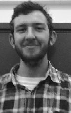
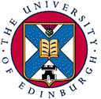

|  |
James CurranInstitute for Communicating and Collaborative SystemsDivision of Informatics 2 Buccleuch Place Edinburgh, EH8 9LW Phone: +44 (0) 131 650 4431 jamesc@cogsci.ed.ac.uk |
 |
|
I am a PhD student in Cognitive Science, in the Institute for Communicating and Collaborative Systems, Division of Informatics at the University of Edinburgh. I am working under the supervision of Dr. Marc Moens. I joined the ICCS after completing an Advanced Bachelor of Science with Honours in Computer Science in the Basser Department of Computer Science at the University of Sydney. |
||
I am currently working on Automatic Thesaurus Extraction which involves analysing huge quantities of text using NLP techniques such as collocation discovery, POS tagging and NP/VP chunking. From this automatic analysis, the relationships between the terms in each sentence are extracted. These relationships are then used to compare the words to determine their similarity. Similar words are grouped together creating a thesaurus. A copy of my thesis proposal is available on my papers page.
Other than research, I am a member of the Nikon-University of Edinburgh Postgraduate Science Communication Team. This involves spending 7 days of the year as a member of the SCIFUN Roadshow team. Another eight days are spent organising a Science Communication program of our choice. I will be developing some computer programming resources for high school teachers.
My honours project, Part of Speech Tagging using Transformation Based Learning was supervised by Dr. Raymond Wong. The project examined the application of the transformation-based learning algorithms and framework to POS tagging as first described by Eric Brill. Various experiments, modifications and extensions to the algorithm were investigated to see if the accuracy, speed and generality of the learning process could be improved. A postscript version of the thesis is available from the papers page.
At Basser, I was involved with the tutoring and assessment of several undergraduate programming and computer science courses including Introductory Programming, Introductory Computer Science, Design and Datastructures, Object-Oriented Programming, Personal Database Tools and Programming Practice in Unix.
I have been involved with Basser's summer school program for several years. These schools are run by the department to expose talented and enthusiastic high school students to interesting Computer Science in the summer holidays (usually early January). I started tutoring at the 1999 Unisys University of Sydney Computer Science School (web page design) and the 2000 Compuware Computer Science School (cryptography in Python). I now develop and run the program on behalf of the department.
As computer/internet technology has advanced and become readily available, the technical content of the summer school has also advanced. Students in the program now (2001 and next year) design a website and develop a web search engine in Python. No experience is required or expected. For more information, see the 2002 Compuware Computer Science School page.
I have organised the teams for the ACM International Collegiate Programming Competition and coordinating the Sydney Competition Site. I was a member of the Basser team that won the Lucent Technologies' inaugral Limbo Programming Competition for their Inferno operating system.